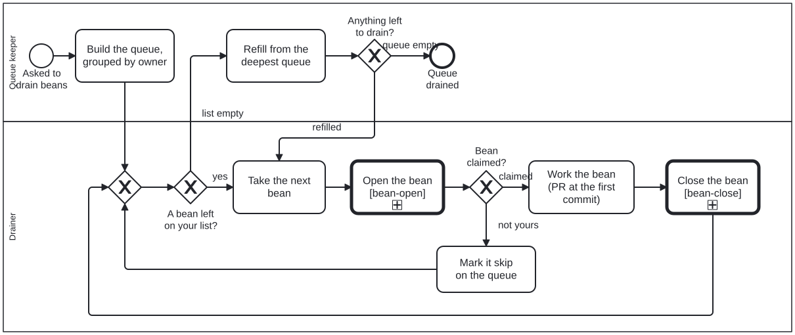

Generated from
cat-harness/skills/sdlc/sdlc-core/bean-drain.md— do not edit here. Typed contract: schema reference.
Bean drain
Owner, 2026-10-24: “update Skills so on draining beans/stories as part of SDLC
and describe Tools for coordination on spawned bean drains”. Bean n7x7.
A drain is the delivery loop run over a queue instead of over one item. Each
bean in it still goes through the ordinary lifecycle
(bean-coordination, todo-manager,
continual-progress). What this skill adds is what goes
wrong only when several agents drain the same store at once: two of them
starting the same bean.
The drain is drawn as a process: Process_BeanDrain
(processes/sdlc/bean-drain.bpmn,
bean bssi). It builds the queue (the drain-queue Tool), then for each bean
calls OPEN (Process_BeanOpen, whose check is the bean-claim-check Tool),
works it, calls CLOSE (Process_BeanClose), and refills. The steps below are
the same loop in prose.
Roles
| role | does | holds |
|---|---|---|
| queue keeper | builds the queue, assigns beans to drainers, refills a drainer that runs dry | the queue file |
| drainer | takes the next bean from its own list, checks, claims, works, closes | the beans it claimed |
One agent can be both. Drainers are cloud threads and agents on the owner’s own machine, side by side. Each one is told apart by its commit author on the bean branch, never by its own say-so:
| agent | commit author on the bean branch |
|---|---|
| cloud threads | Claude <noreply@anthropic.com>, or litlfred <litlfred@users.noreply.github.com> |
| agy, the owner’s local Antigravity agent | Carl Leitner <litlfred@fenugreek.home> |
| the state bot | folio-state-bot |
A new kind of agent joins this table when it starts committing. An author not in the table is treated as “another agent”.
Spawning drainers
A queue keeper that starts drain threads seeds each one as
coordinate §”Since 2026-10: a spawned helper is reachable,
and the owner’s authority is not relayed” says: the owner’s words verbatim, no
relayed rulings (a merge window included), and a finishable list. Give each
drainer this skill and its list, not a copy of the rules.
The first multi-lane drain was epic ml9h (2026-10-10, three lanes over three
stores). Its rules hold here too: work leaves up (a parent closes when its
last child does), one PR per bean or tight cluster, and scrap obsolete beans
with reasons. Its lane B stalled on relayed authority, which is bean yex5
and the coordinate section above.
1. Build the queue — the drain-queue Tool
Read every bean store, not the one this checkout mounts. Since 2026-10-30
each bean has one home (bean-coordination, “Each bean
has one home”): the cat/cat-harness/beans branch on folio-assistant, plus the
tools and core layers’ beans on their main. The cat-harness copy of that
branch keeps no beans any more. If two stores ever hold the same id again,
bun run cat check:bean-one-home names it; the newest updated_at wins here
and the disagreement is listed, so somebody can fix it.
Leave out, each with its reason in the output so nothing vanishes silently:
- goals and epics (
milestone,epic): they close when their children do; - blocked: a bean in
blocked_bythat is still open (bean-blocking); - closed or not ready:
completed,scrapped,draft; - owner-held or parked: the last note says it waits on the owner, a date or a ruling;
- not drainable here: it needs something the drainers lack (a network host, a person’s account). Route it to an agent that has it instead, and say which.
Group the rest by owner (the thread or agent that already holds work in the same area), in priority order, and write the result to one shared file. Mark the beans other agents hold as skip. Refill a drainer from the deepest queue when it finishes, and refresh the file each time.
The queue is advisory. It says who should take a bean; only a claim says who did. So a drainer still runs step 2 on every bean it takes from the queue.
2. Before each bean: check, then claim — the bean-claim-check Tool
Run this before any work on the bean, including reading code for it. The
trigger is starting work, not claiming (bean-coordination
§”The trigger is STARTING WORK”).
- Fetch every copy, in its own command:
git fetch origin cat/cat-harness/beans. A fetch in the same compound command as the read is not a barrier (beanpomp, case 2). - Read the last commits on the bean’s file, per copy:
git log -3 --format='%an %cI %s' FETCH_HEAD -- 'beans/defs/*<id>--*'. Skip the bean if another agent committed to it in the past 24 hours, or its last note says it is claimed. - Look for open work naming the bean: an open PR whose title, body or
branch names the id, in every repository the drain touches — the
open-work-lookupTool. Skip if one exists and is not yours. This is the step that catches the f1e1 case below. - Claim: set
status: in-progress, append a dated note naming you and your session, and make a plain commit on every copy. Push it before any other commit of yours. - A rejected push means somebody wrote first: fetch, rebase, re-read the bean, and go back to step 2. Never force-push a bean branch.
status: in-progress alone is not a claim you can trust. It goes stale
(§”A quiet claim” in bean-coordination), so steps 2 and 3 read activity, not
status.
Why plain commits, and why on every copy. bun run cat state:push and
bun run cat beans:claim write the one copy the checkout points at. With more
than one copy, the others go on saying todo, and that drift is what the
2026-10-16 store reconciliation had to repair by hand. So while there is more
than one copy, a drainer edits beans with plain git commits on each, and never
with state:push. When the copies become one, beans:claim is the claim again
and this paragraph goes.
3. Work it
- Open the PR at the first commit, with
Closes-bean: <id>in the body (continual-progress,pr-description). An open PR is the claim every other agent can see without the bean branch. - Add the PR’s link to the bean with a dated note, on every copy.
- Work only the bean you claimed. A cause you find inside it that is a separate piece of work becomes a new bean, and is checked and claimed in its own right.
4. When the bean waits on the owner
Ask through ask-the-person:
the full question and every option in the chat first, then the card. Record the
question’s link in the bean. Keep the claim while the question is open, and take
the next bean meanwhile. A bean that will wait long goes back to todo with the
question recorded, so that it does not hold the queue.
When the question is about changed pages, it carries the staging preview: one
deep link per changed page, with the same page on main, in the output
contract’s stagingLinks field
(staging-review §”The deep-link rule”).
5. Close it, and refill
Close on evidence (bean-coordination §”Closing a bean
whose work has already landed”), on every copy. Then tell the queue keeper, or
take the next bean on your list. A drainer whose list is empty asks for a refill
instead of picking from another owner’s list.
The measured case: f1e1, 2026-10-24
Two agents started the same bean minutes apart, and both opened PRs in two
repositories. Times from gh api on the four PRs and git log on both bean
copies:
| UTC | what |
|---|---|
| 07:46:28 | agy’s first commit for f1e1 |
| 07:47:35 | agy opens cat-harness-tools#686 |
| 07:49:20 | agy opens cat-harness#502 |
| 07:50:08 | a cloud thread’s first commit for f1e1 |
| 07:50:22 | the cloud thread opens cat-harness-tools#688, merged 08:04 |
| 07:50:29 | the cloud thread opens cat-harness#503 |
| 07:52:57 | agy’s first commit to f1e1 on a bean branch |
Neither agent claimed before working. And step 2 alone would not have helped:
both copies said in-progress since 2026-10-16 and showed no new commit until
07:52:57. The duplicate existed only on an open PR’s head, two and a half
minutes before the second start. Step 3 would have caught it. Step 4, done by
the first agent, would have made step 2 catch it too.
Tools
| Tool | answers | contract |
|---|---|---|
drain-queue | which open beans, grouped by owner, with what was left out and why | definitions.queue in the output schema |
bean-claim-check | may I take this bean; if so, claim it on every copy | definitions.claimCheck |
open-work-lookup | does a path, a path prefix or a bean id appear on main or any open PR head, and where (bean pomp) | definitions.lookup |
Run from an index checkout, with one --copy per bean copy checkout:
bun run cat beans:drain-queue --copy folio-assistant --copy cat-harness --holdings holdings.json
bun run cat beans:claim-check <id> --copy folio-assistant --copy cat-harness \
--repo litlfred/cat-harness --repo <tools-layer-repo> --session <your session link>
bun run cat lookup:open-work --bean <id> --repo litlfred/cat-harness # or --path / --prefix
Pass one --repo per repository the bean’s work can land in: for f1e1, the
harness and its tools layer.
--dry-run on the claim check says what it would do and writes nothing.
--json on any of them emits the contract below. The claim check exits 0
when claimed, 1 on a skip and 2 when it could not tell; 2 is never “free”.
The Tools satisfy bean-coordination rather than this skill: this skill’s
contract is the whole drain, and each Tool takes one step of it.
As a process
The drain will be drawn as a BPMN process that calls the shared bean OPEN and
CLOSE subprocesses (owner choice A on bean m8gz, 2026-10-24): OPEN’s check is
step 2, CLOSE is step 5. Bean bssi builds it once m8gz lands.
Input and output
The contract is input.schema.json
and output.schema.json.
- In: the bean
copiesto read, theagentsand how each is recognised, the owners’ currentholdings, thewindowHours(24) and thequeueFile. - Out: the
queue(by owner, excluded with reasons, copies that disagree), oneclaimCheckper bean taken, and what each drainer closed or asked.
Processes that run this skill
This skill has its own process: Drain the beans.
